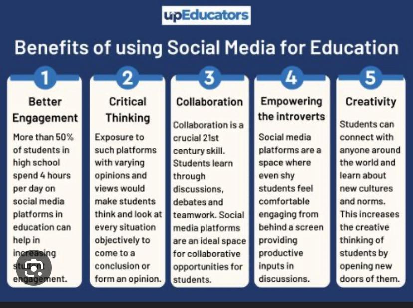
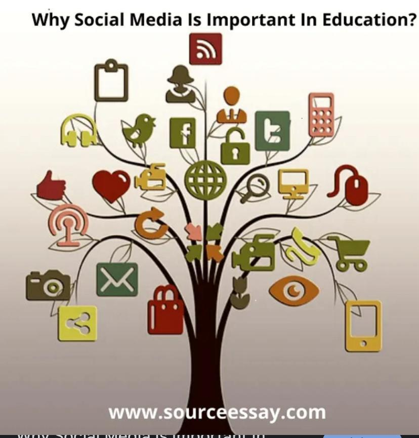
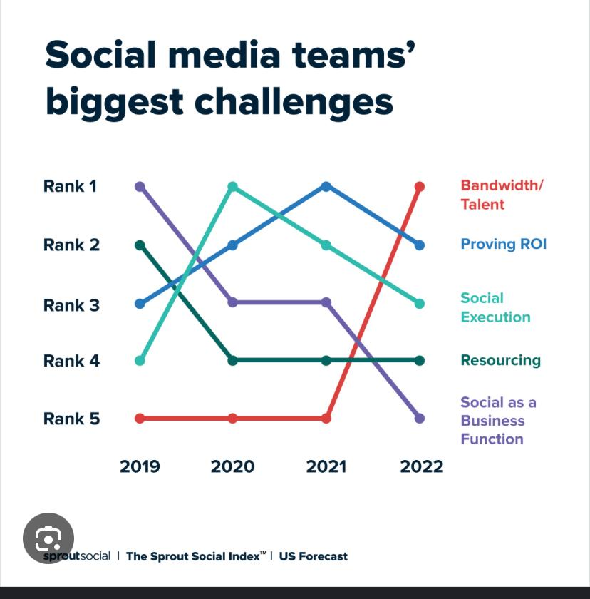
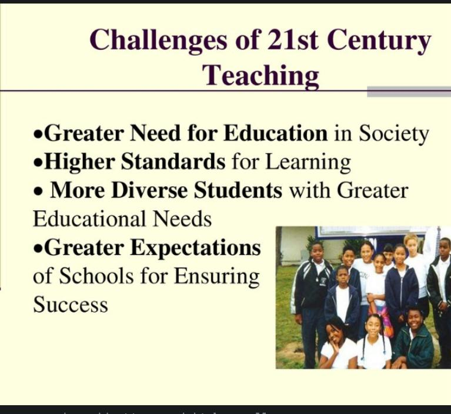
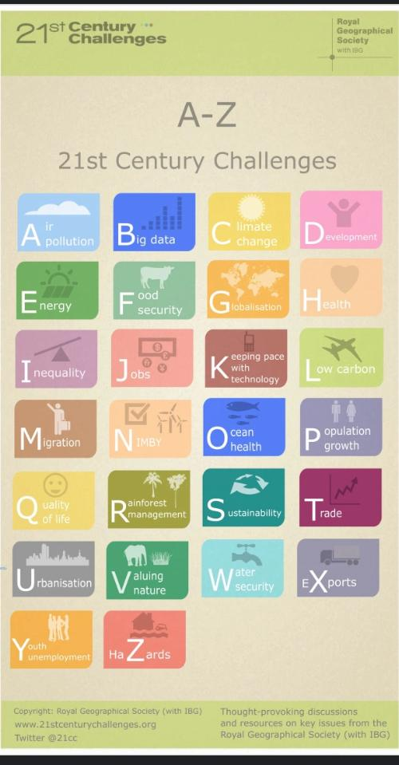

Welcome to the Educational Integration of Social Media
Exploring the role of social media in modern education.
Introduction
Social media has transformed education by facilitating communication and collaboration.
It provides platforms for engagement, learning resources, and a space for students and teachers to interact.
Integration of Social Media in Education
Benefits
1. Personalized Learning
- Tailored educational experiences based on individual learning styles
- Incorporates various educational technologies
2. Enhanced Skills
- Enhances critical thinking and problem-solving skills


Benefits Podcast
Challenges
1. Accessibility
- Limited access to technology and internet in some regions
- Rural and low-income students face barriers
2. Privacy and Security
- Privacy concerns with student data on online platforms
- Risks of cyberbullying and online harassment



Watch More on the Challenges of Social Media:
Challenges PodcastReferences
Here are the references used in this project:
- Author 1. (Year). Title of the article. Journal Name. Retrieved from link
- Author 2. (Year). Title of the article. Journal Name. Retrieved from link